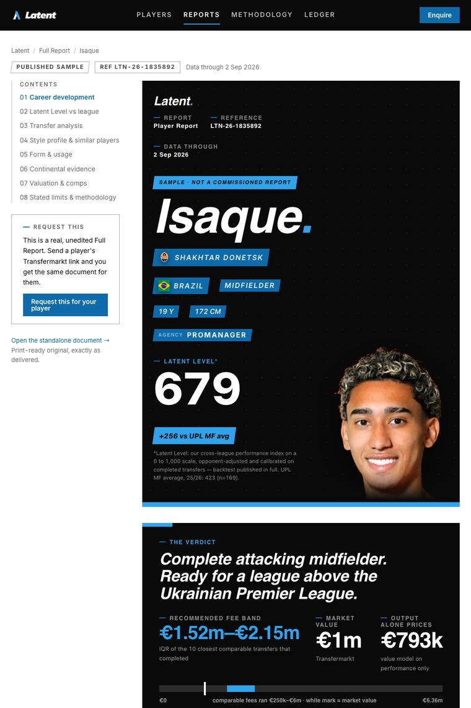
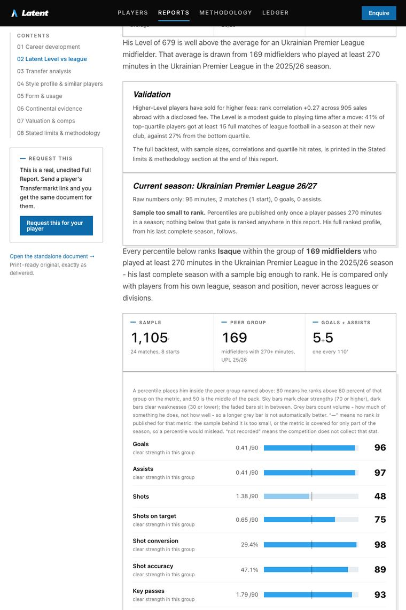
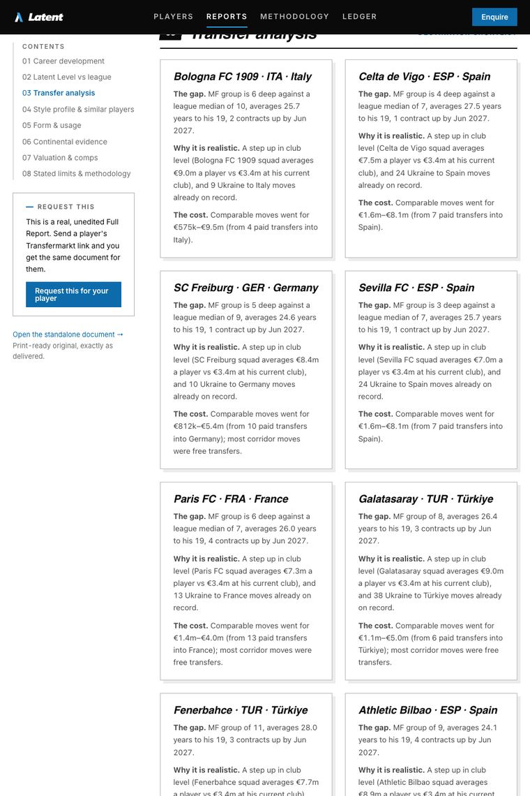
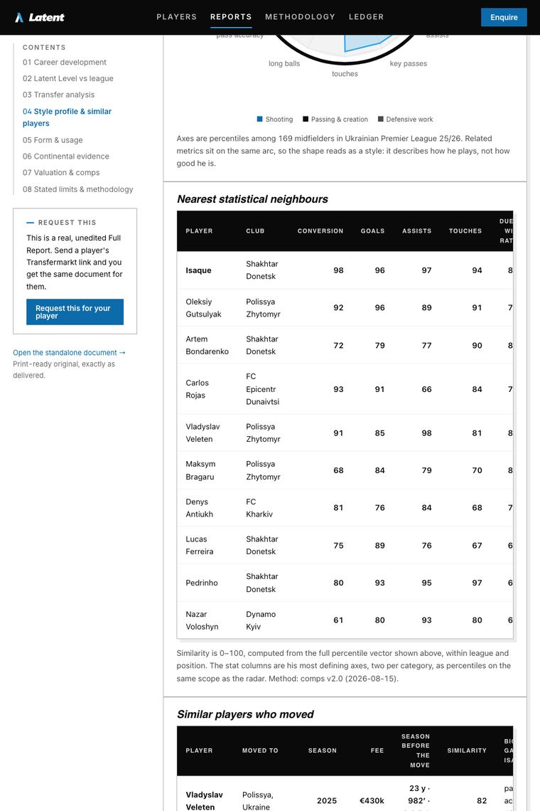
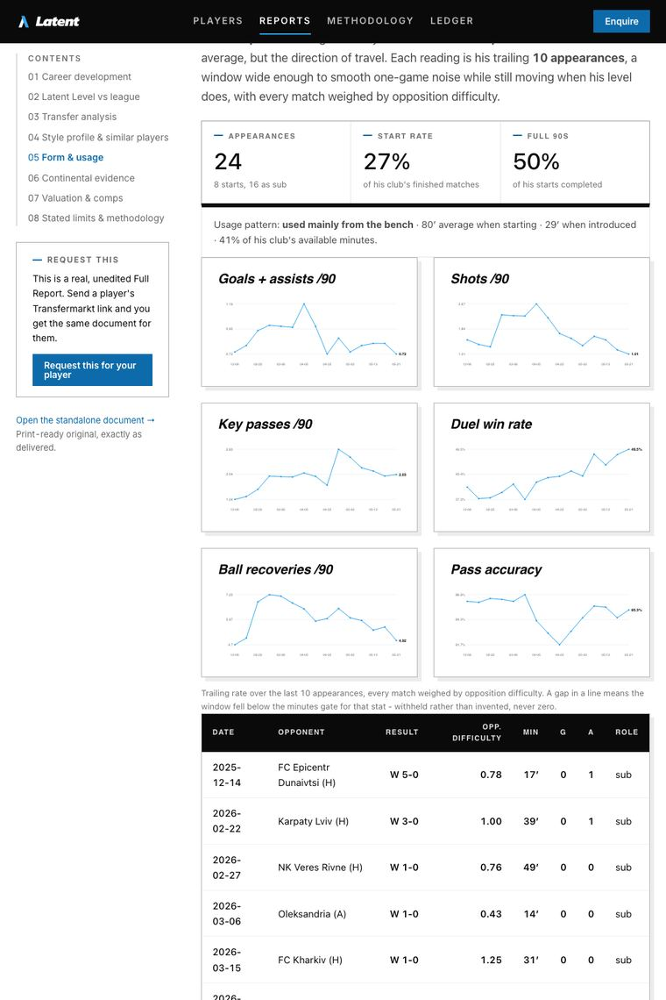
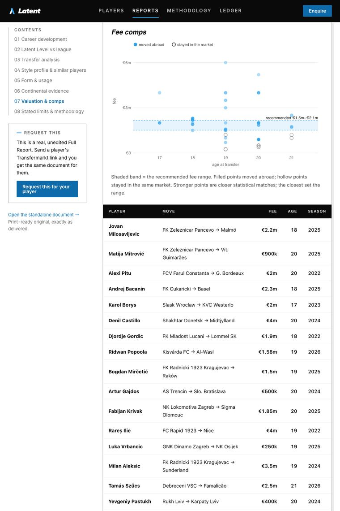

Free report
One player. The full report. Free, within 48 hours.
The same nine-section document our clients pay for, on a player you name. Send the Transfermarkt link and the decision the report has to support. A person reads the request and the document comes back as a PDF.
Request a free report Read a published sample

What the report contains
Nine sections. Every page below is a real one.
These are cropped pages from a report we published whole, not a mockup. Your player gets the same document, built from 407,495 per-match stat lines and 66,860 transfer records.
The verdict, first
One sentence on the level he is ready for, a recommended fee band, and the market value beside it. The rest of the document is the evidence.

Latent Level vs league
His rating on a 0 to 1,000 scale, printed next to the average for his position in his competition, with the percentile profile it is built from.

Transfer analysis
Named clubs with the squad gap he fills, why the step is realistic, and what comparable moves into that league actually cost.

Style and similar players
The ten closest profiles in our data, with what happened when they moved: fee, destination, minutes held at the new club.

Form and usage
Trailing form per match, start rate, and how much of the available minutes he actually played.

Valuation and fee comps
A fee range from completed transfers of comparable players, not from a market-value guess.
Sections a player does not have the data for say so on the page rather than disappearing. Every report closes with a stated-limits section, and how every number is made is public. Ratings are within one competition, season and position group; the only cross-competition figure is the Latent Level, whose backtest is published.
How it works
Send a link. Get a document.
No call, no quote, no price list. The free report is the same document a paid one is; what you pay for later is repetition and depth on a target team.
- You send the player's Transfermarkt linkIt is the one link that identifies a player beyond doubt. A name alone gets matched to the wrong person more often than you would think.
- We check coverageThe player needs at least one season of 270 or more minutes in a competition we hold. If he is outside our data we reply within 48 hours saying exactly that.
- The report is built and read by a personThe engine drafts it; a person checks every number against the source before it goes out. Sections without enough data print a stated limit, not a guess.
- You get a PDF within 48 hoursYours to forward. If it changes a decision, tell us which one; that is the only thing we ask for.
Request
Which player, and what is the decision?
Four fields and a sentence. The Transfermarkt link is checked before the form sends.